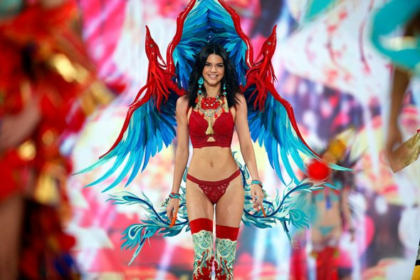

Рейтинг возглавила 22-летняя американка Кендалл Дженнер. В период с 1 июня прошлого года по 1 июня 2017 года она,
по данным Forbes, заработала $22 млн. Такой успех девушке, как отмечают авторы списка, принес ее аккаунт в Instagram,
где она распространяет рекламные объявления для аудитории в 85 млн человек. Также подобный заработок стал результатом
выгодных сделок с производителями косметики, парфюмерии, одежды и спортивных товаров Estée Lauder, La Perla, Adidas и другими.